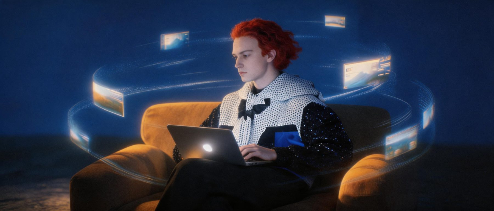

停在视频的某一秒，保留人物、场景和线索，用一句话改接下来的事。AI 给出三个下一幕，你选一条，故事树就多一枝。

它会读出这一帧该保留什么、可以改什么。你选一种改法，再从三个下一幕里挑一条。从按停到选定，页面帮你计时：10 秒内说清想改什么，正是这个原型要验证的事。
点画面中间的按钮，或者按空格键，停在你喜欢的那一秒。也可以直接点时间轴上的圆点。
三条路径都从《等待潮汐的城市》出发，每条只在一个节点改了一件事。点卡片翻过来，看它改了什么。
停在一个时间点，系统读出这一帧的人物、场景和叙事线索。
上下文来自视频，不需要你描述前情。继续当前线索、改变一个条件，或换一种表达。只改一个条件，候选才既连续又真的不一样。
10 秒内说清，一句话，不写 Prompt。AI 从这一帧出发生成三个下一幕，标准是「保持连续，同时真正改变走向」。
由人选，AI 不替你决定走向。每次选择存成故事树上的一枝：从哪一帧开始、改了什么、选了哪一段。
任何节点都能再分叉，别人也能接着你的走。下面是设想中的落点，用来检验这个交互是否成立，还没有做成产品。
刷到想接着看的那一秒，长按暂停，说一句「如果……」，评论区变成分支区。
看完一集，从你最在意的那个镜头分叉，看三个可能的下一集开头。
孩子在最喜欢的那一页喊停：「如果小兔子会飞呢？」故事每晚长出不同的一枝。
观众决定主角下一步去哪，每条分支的选择率，就是一份真实的创意测试。
下一步验证：用户能否在 10 秒内说清想改变什么，并从三个候选中选出一条既保持连续、又真正改变走向的下一幕。本页画面为 AI 生成的静态参考帧；候选与结局文案为预设内容。
人物和世界先保留，用户只需要说「改什么」。
改动越小，三个候选越能既连续、又真的不一样。
AI 负责生成可能的下一幕；选哪一条，交给人。